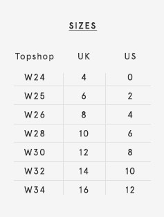

The skin-tight Joni is your ultimate going out jean. Super high-rise with a disco silhouette, these jeans were made for the fashion-confident.


HOW TO STYLE IT
Balance the skin-tight silhouette of the Joni with a boxy, loose-fit Breton tee for day.
Add a pair western-style ankle boots for a casual, west coast vibe.